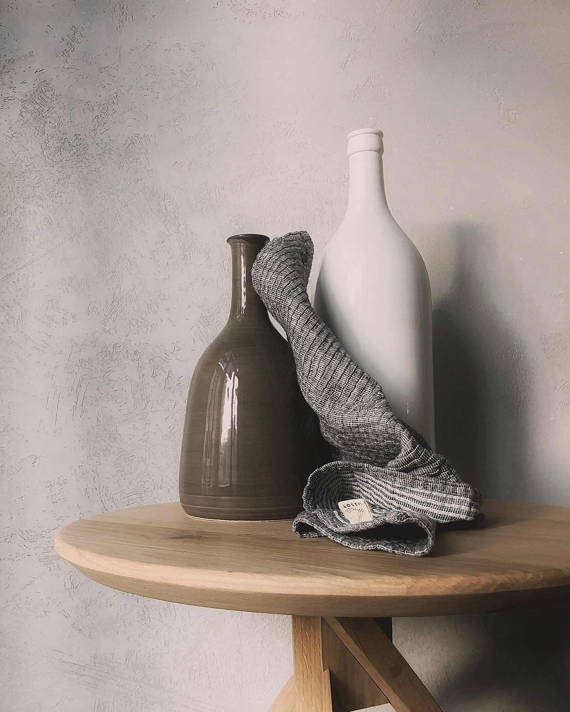

The Sarangua
Walking Method
A science-based walking system for sustainable weight loss and lifestyle transformation.
A science-based walking system for sustainable weight loss and lifestyle transformation.




From beginner to deep transformation — we're with you every step of the way.
Step 1
A science-based understanding of how to use walking the right way.
Step 2
A structured programme to build the habit, lose the weight, and feel the change.
Step 3
For those who are ready to go all the way and change their life from the ground up.
I had started so many times before.— Participant, 21-Day Programme
This time, for the first time, I actually felt the difference.
Spots are limited. Those who show up are the ones who begin.